VSCode 优化使用体验篇（设置 | 插件）
众所周知，vscode 是一个非常好用的 文本编辑器，通过各式各样的插件几乎是万能的，也可以作为好用的 IDE，但 vscode 有很多默认不开启的、个人认为非常好用的一些设置，因此，在这里与大家分享，同时也推荐几个好用的插件。
vscode 官网：https://code.visualstudio.com/
推荐设置
下面是我的 settings.json 其中的一些基础配置
{
"files.autoSave": "afterDelay",
"files.autoGuessEncoding": true,
"workbench.list.smoothScrolling": true,
"editor.cursorSmoothCaretAnimation": "on",
"editor.smoothScrolling": true,
"editor.cursorBlinking": "smooth",
"editor.mouseWheelZoom": true,
"editor.formatOnPaste": true,
"editor.formatOnType": true,
"editor.formatOnSave": true,
"editor.wordWrap": "on",
"editor.guides.bracketPairs": true,
//"editor.bracketPairColorization.enabled": true, (此设置vscode在较新版本已默认开启)
"editor.suggest.snippetsPreventQuickSuggestions": false,
"editor.acceptSuggestionOnEnter": "smart",
"editor.suggestSelection": "recentlyUsed",
"window.dialogStyle": "custom",
"debug.showBreakpointsInOverviewRuler": true,
}
插件
插件种类繁多，对于各式各样的插件，我将我推荐的插件分成了四类，其中基础功能类是我认为在各种地方都很有帮助的插件，几乎可以是必备，其余的插件在很多情况下也很有用，可以按需安装
外观类
主题
-
Night专门为夜猫子准备的,不过亮色主题也很不错
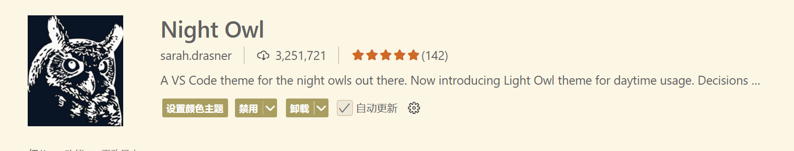
-
One Dark Pro一款非常推荐的暗色调主题，好看又护眼。
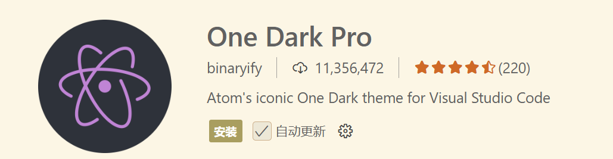
-
GitHub ThemeGitHub 的官方主题
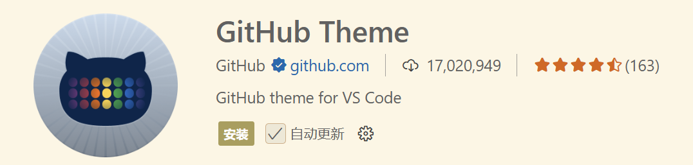
-
Dracula Official一款很有特点的吸血鬼主题
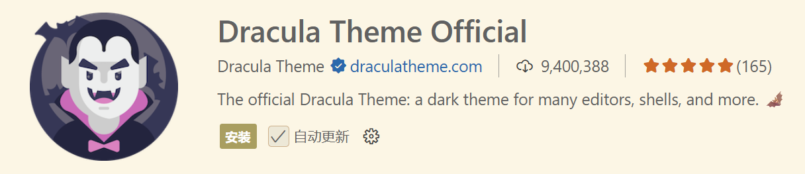
图标主题
-
Material Icon Theme个人正在用的图标主题，好看，类型大而全
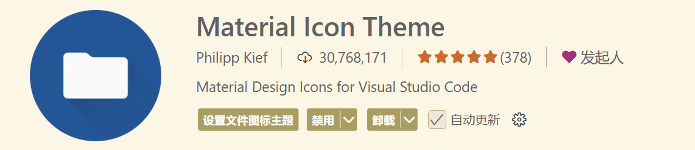
背景
-
Vibrancy Continued使 vscode 背景高斯模糊，非常吃性能（慎用
使用方法：按
F1或者ctrl+shift+p，键入Reload Vibrancy，然后重启 vscode取消方法：按
F1或者ctrl+shift+p，键入Disable Vibrancy，然后重启 vscode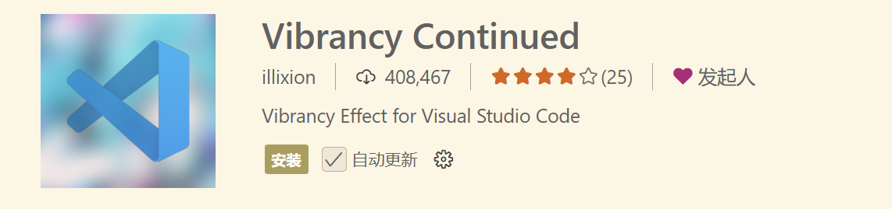
基础功能类
-
Chinese (Simplified) (简体中文)【中文语言包】这应该不用多介绍，是 vscode 的官方中文语言包
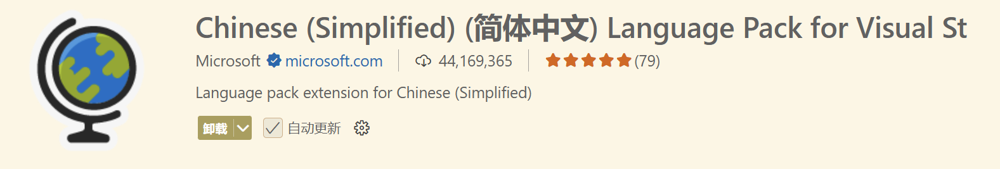
-
Error Lens【错误提示】可以将原先显示的问题显示在对应行右侧并高亮
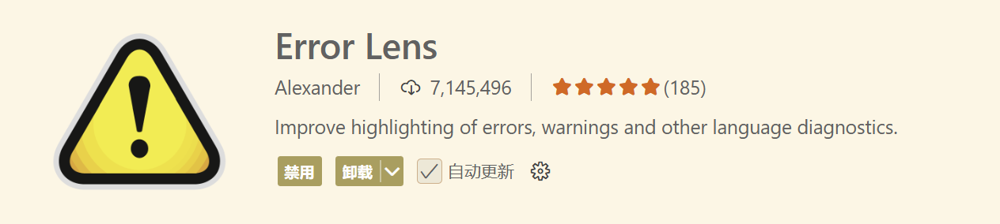
-
Path Intellisense【路径补全】在输入路径时，有智能提示补全
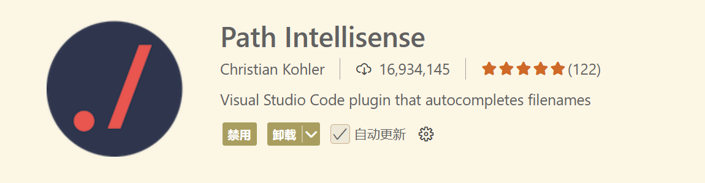
-
Image preview【图像预览】可以预览引入的图像
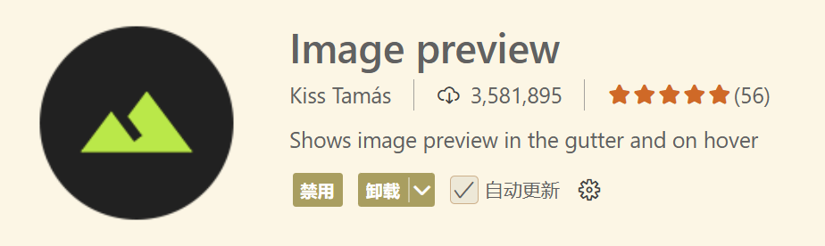
拓展功能类
-
CodeSnap【代码截图】一款非常好用的代码截图插件
使用方法:Open the command palette (Ctrl+Shift+P on Windows and Linux, Cmd+Shift+P on OS X) and search for
CodeSnap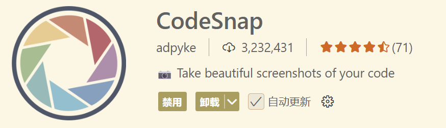
-
Prettier - Code formatter【代码格式化工具】支持超多语言，一键格式化，美化代码格式
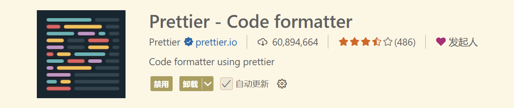
-
GBK to UTF8 for vscode【文件编码转化】可以将文件在 GBK 与 UTF8 编码之间无瑕转换
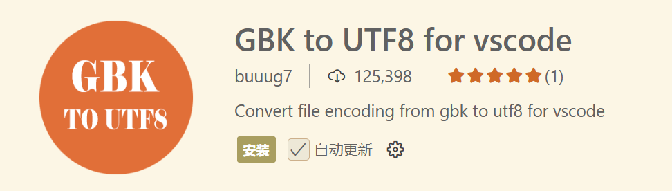
-
Hex Editor用来查看文件的 hex 或 UTF-8 编码
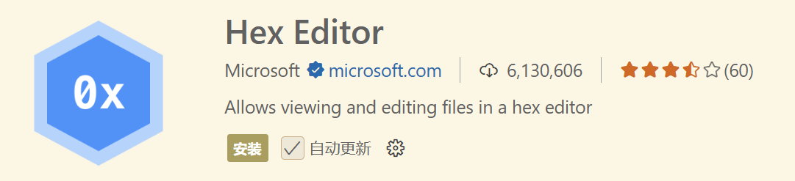
-
Doxygen Documentation Generator【文档生成器】写注释和文档时非常好用
默认的使用方法为：在==代码文件头==或者==自定义函数==上方的位置输入：/ ** 然后 enter 键,则会自动生成相应的注释
自定义代码格式可以通过：File–>Preference–>Settings–>Extensions–>Doxygen Documentation Generator Settings 设置相应的格式
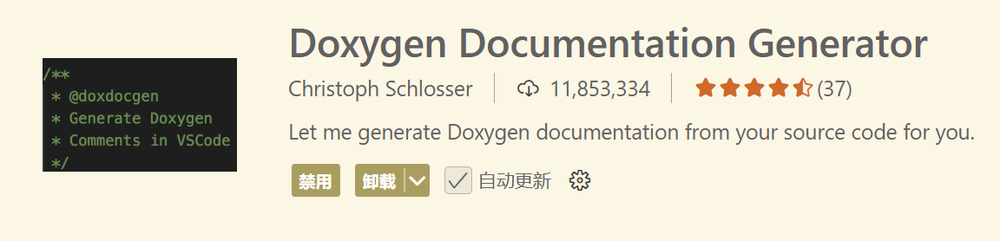
-
Remote - SSH【ssh 连接】连接远程服务器或虚拟机
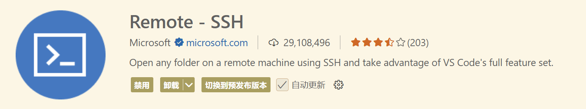
-
Hungry Delete【像 IDEA 的退格键】删除整个空格或制表符块，并减少程序员按退格键所需的时间
使用方法:ctrl+backspace
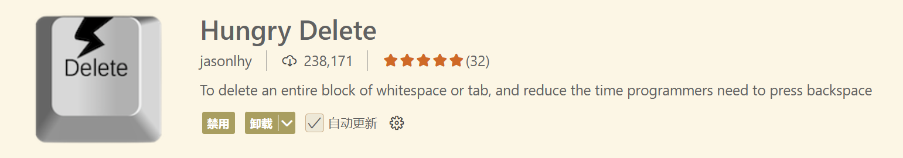
算法练习类
-
Code Runner【代码运行工具】支持多种语言，语言运行环境需自己配置
推荐修改配置：
bash { "code-runner.runInTerminal": true, "code-runner.saveAllFilesBeforeRun": true, "code-runner.saveFileBeforeRun": true }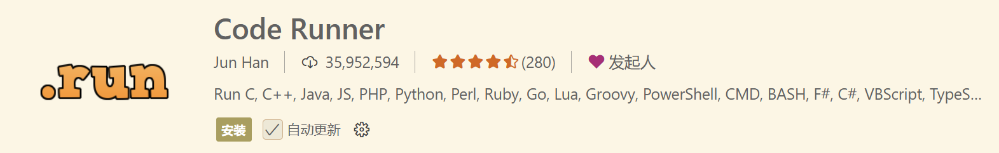
-
Competitive Programming Helper (cph)刷算法题时很好用，可以自己设置样例，一键全部运行
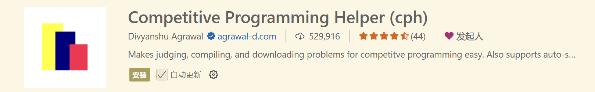